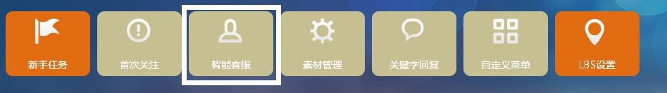
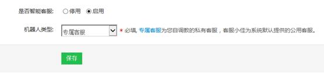
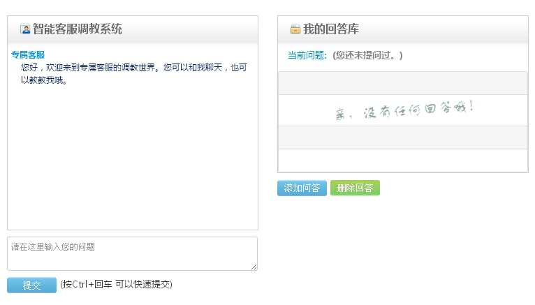

智能客服指的是客服机器人，一共有两种模式，第一是客服小佳，客服小佳是一个纯粹的机器人，客户发送任何消息都会有机器人回复，不需要任何设置，机器人会根据海量数据库自动回复给客户，但是这种机器人偏向娱乐化，回复会有些无厘头，不太适合品牌商家，所以还有一种可调教的机器人供选择，就是“专属客服”，选择了专属客服以后，你可以在专属客服调教中教机器人如何回答，预先将与您公司相关的问题教给机器人，以后粉丝问到相应的问题，机器人就可以按照您教的回复了。
下面我们具体介绍一下如何设置：
一、首先选择智能客服。如图：
二、选择是否开启智能客服，然后选择机器人类型。
三、下面我们来详细说一下专属客服调教，首先在页面下方输入一个问题，比如：你吃饭了吗？在上面的对话框中可以看到默认的回答，如果您觉得回答的不好，就可以在“我的回答库”里点击添加问答，然后添加一个您想要的回答，这样就调价完毕了，以后客户如果问答“你吃饭了吗”，智能客服就会按照您设置好的答案进行回复。
